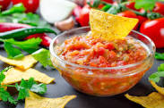

Salsa

Description
This simple spicy salsa dish will go perfectly with a bag of Tostidos.
Created with the freshest veggies, this salsa is an all time favorite among
thousands of people.
Ingredients
- Canned Tomatoes
- Onions
- Lemons
- Bell Peppers
- Salt
- Green Chilis
- Chili Flakes
Steps
- Dice all veggies
- Mix canned tomatoes and veggies in a big bowl
- Use an immersion blender to blend together the tomatoes and veggies
- Add lemon juice, salt, and chili flakes to taste